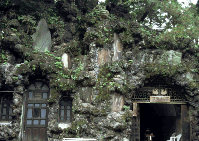
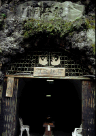
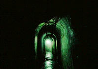
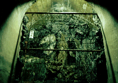
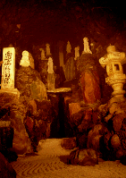
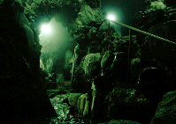
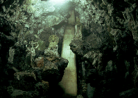
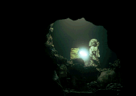
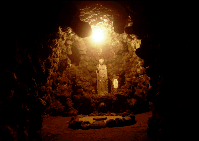

洞窟観音/群馬県高崎市
高崎の高島屋から西に向かう道はみどころいっぱいでなかなか楽しい。
繁華街から高崎城跡、さらに烏川を越え、途中山田かまちデッサン館でグラっときて最後に高崎一のナイススポット観音山が控えている、というルートである。
その観音山。有名なのは白衣大観音というデカい観音様なのだが、ここで紹介するのはこの大観音よりも少し先に行ったところにあるもうひとつの観音様で、その名も洞窟観音。
 
洞窟の中に坂東三十三観音像など40以上もの仏像が安置されているのだ。といっても、元々洞窟があったわけではない。400もの洞窟をある人物が掘ったのだ。
その人物とは山田徳蔵。
彼は大正時代の呉服問屋の大旦那。全盛期には中国の青島にまで出店した程で、今にして100億円程の資産を築いたというモーレツ商人。
しかし「己の財、田畑一つ残らず公のために使うべし」というオソロシイ信念のもと観音霊場建設にのりだしたのだ。以後、狂人扱いされながら彼が没するまでの半世紀間、その洞窟は掘られてきたのだ。
計画は大正2年、着工昭和2年のことである。
 
それでは早速その洞窟に入ってみよう。
板碑や溶岩でデコレートされた入口から入る。コンクリートで固められた通路を歩いて行くとその両脇に観音様が安置されている。
この洞窟は当初高崎市民の防空壕としても利用できるように計画されたという。寒いし上から水が垂れて来て不気味だ。
  
そしてその先に突然現われるメインスペース、大広間において、その寒さは一気に氷点下に突入する。
なんなんだこれは。かなりの高さまで掘られた大空間には上のほうまで観音像が置かれている。セメントで造った模造の滝や川がその中をうねり渦巻く。無音の渓谷。そして全体を覆う溶岩と湿った冷たい空気。
ああ、これぞ日本のグロッタ。
怖い。怖すぎる。平日にひとりでここに足を運ぶのはやめた方がいいかも。
 
1998.10
珍寺大道場
HOME